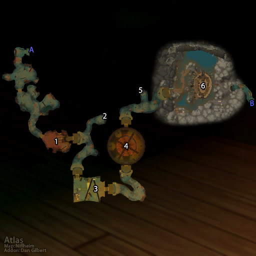

Deadmines

Dungeon Facts:
Located in the heart of Orgrimmar this 5 man dungeon is intended for new players.
Ingredients
- ½ cup whole milk ricotta cheese
- ¼ cup shredded mozzarella cheese
- ¼ cup shredded provolone cheese
- 1 tablespoon grated parmesan
- ¾ teaspoon dried parsley
- ¼ teaspoon kosher salt
Steps:
- Gather all ingredients.
- To prepare the ravioli dough: Mound flour on a work surface and form a well in the center. Add eggs, olive oil, and salt to the well and beat together with a fork.
- Using a fork or your fingers, gradually mix egg mixture into flour, working from the center out and using your other hand to keep the flour mound steady until a thick paste forms. Using your hands, press in remaining flour until a shaggy dough forms.
- Knead dough until smooth and elastic, 8 to 10 minutes. (Dough should have consistency of modeling clay and bounce back when poked). Wrap dough in plastic wrap and let stand at room temperature for at least 30 minutes or up to 2 hours.